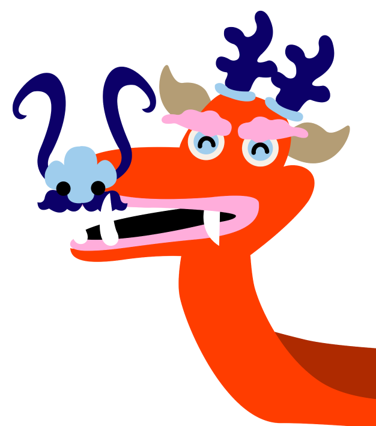
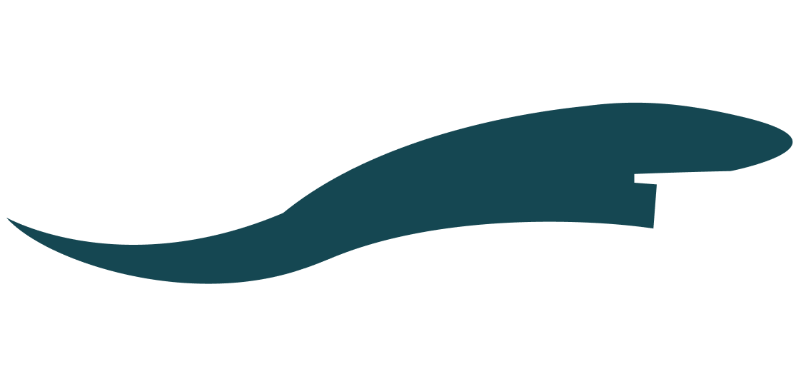
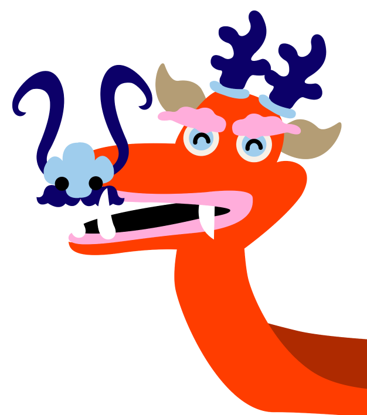
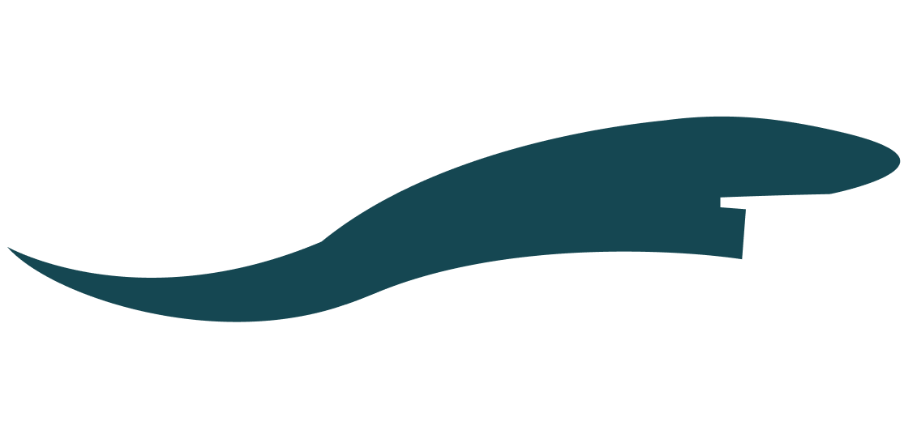

Wat is het Drakenbootfeest?
Het drakenbootfeest is een traditionele Chinese feestdag. Het wordt ook wel Tuen Ng Jit (龍舟派對) genoemd. Op de vijfde dag van de vijfde maand wordt het Chinese Drakenbootfeest gehouden. Dit is geen vaste datum, want in China is er een andere jaartelling. De Chinese jaartelling heeft te maken met de stand van de maan. Het feest omvat het eten van de rijstballen (zongzi) en het houden van drakenbootraces.
Het Drakenbootracen is meer dan 2000 jaar geleden begonnen als een vruchtbaarheidsritueel. De mensen dachten dat hun land dan vruchtbaarder zou worden en dat er genoeg regen zou vallen, zodat de plantjes goed konden groeien. Op deze dag worden ook allerlei rituelen uitgevoerd, het huis schoongemaakt, desinfecterende planten opgehangen en afweeramuletten opgehangen.
Waarom wordt het Drakenbootfeest gevierd?
Het feest wordt gevierd om de dood van de dichter en minister Qu Yuan van de oude staat Chu te herdenken. Op een zeker moment werd Qu Yuan verbannen van het hof en verdronk hij zichzelf in de Mi Lou rivier toen hij hoorde dat zijn land, Chu, ten prooi was gevallen aan de macht van de staat Qin.
Er wordt ook gezegd dat de bevolking die Qu Yuan bewonderde zich in boten haastten om hem te redden. Dit is de oorsprong van de drakenbootraces. Toen zijn lichaam niet kon worden gevonden, lieten mensen rijstballen in de rivier vallen zodat de vissen het lichaam niet zouden opeten van Qu Yuan.
Het openen van het drakenbootfeest
Een belangrijk moment – voorafgaand aan de races zelf - is het ‘openen van de ogen van de draak’. Hiervoor wordt op de eerste dag van de vijfde maand een taoïstisch priester uitgenodigd die met een kloddertje rode verf de ogen van de draak kleurt.
Op de vijfde dag van de vijfde maand wordt het Chinese Drakebootfeest gehouden. Dit is geen vaste datum, want in China is er een andere jaartelling. De Chinese jaartelling heeft te maken met de stand van de maan. Het feest omvat het eten van de rijstballen en het houden van drakenbootraces.
Waar komen de draken vandaan?
Niemand weet precies wanneer de eerste legendes over draken zijn ontstaan. De legendarische Chinese draak is ontstaan tijdens eeuwenoude ritueel waarbij totems werden aanbeden. Deze totempalen bestonden uit verschillende dieren waaronder de adelaar, de tijger en een slang.
Door middel van dit ritueel maakten eeuwenoude beschavingen nieuwe wezens door bestaande dieren te combineren. De Chinese draak was geboren met het lichaam van de slang, de poten van de tijger en de klauwen van de adelaar.
Draken hebben door de jaren heen via de mythologie en legendes van China een heroïsch beeld gekregen en brengen hoop en geluk aan de Chinezen. De Chinezen zijn zelfs zo trots op de draken dat ze zichzelf zien als de afstammelingen van de draken.
Waar leven de draken?
In de Chinese en ook de Westerste mythologie hebben draken wel bestaansrecht. In de Chinese legendes zien we vaak de scheiding terug komen tussen hemel en aarde. Hierbij leven de heilige draken in de hemel tussen de wolken en leven de aarde draken ver onder water. Westere legendes hebben het vaker over draken die ergens ver van de beschaving leven op een berg of een verlaten kasteel.
Hoe werkt het drakenbootracen?
Teams van zeventien personen gaan de strijd met elkaar aan op het water. Het is een Chinese sport. De Drakenboten zijn eenentwintig meter lang en een meter breed. Een drakenboot is een open kano. Om het tempo aan te geven zit voorop een trommelaar. De trom zouden niet alleen dienen om het tempo van de roeiers op te zwepen maar ook om de vissen en
watergeesten weg te jagen. De boten worden meestal bemand door een specifieke wijk of leden van een sportvereniging en de competitie is dan ook groot. Aan het eind van de baan liggen boeien in het water waarop vlaggen zijn geplant: het team dat als eerste zo’n vlag uit een boei weet te bemachtigen is de winnaar.